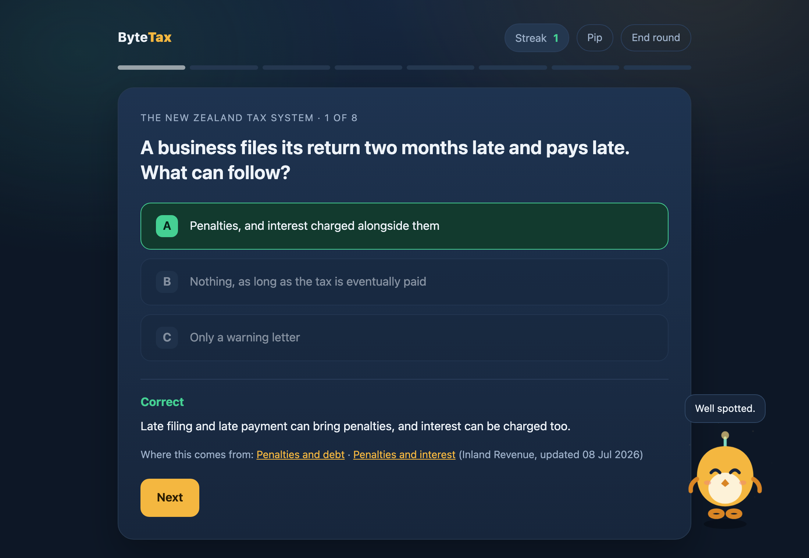

ByteMind Ltd
以实证定策略，以策略促增长
面向专业服务机构的精品咨询。商业分析、数字化转型和跨境战略：学术严谨，商业导向。
查看我们的服务 →来自 ByteMind 指数
来源：BIS、OECD、RBNZ、Stats NZ。完整方法和可下载的表格见指数页面。
功能
三个领域，同一个证据标准。
面向新西兰、澳大利亚和东南亚的专业服务公司、行业组织和成长型企业。
01
商业分析与市场情报
市场规模测算、竞争情报和客户经济性分析，最终落到决策上，而不是停在仪表盘上。
02
战略税务与跨境咨询
为跨境扩张的企业做实体架构、转让定价和市场进入规划。
03
专业服务机构的数字化转型
为会计、税务和财务团队制定技术路线图，评估 AI 准备情况，并推动流程自动化。
精选研究
你可以查看的依据
我们发表的内容都公开——读一读，核对数据，自己判断水准。
流程
我们的工作方式
01
把问题说清楚
你要做的决定，以及什么依据会让你改变这个决定。
02
收集与分析
一手数据、官方来源和同行评审研究，用平实的语言讲清楚。
03
交付简报
一份清晰、可执行的简报，拿来就能用。没有通用模板，也不堆砌行话。
产品与免费工具
三款产品，依据同一批材料
我们的软件和咨询服务出自同一套工作方法：有来源、经过核对，并且清楚说明它能做什么。
macOS 应用 · 适合事务所与小企业
ByteBook
开发票、报 GST、记费用、导入银行流水、出报表，账目都留在你自己的电脑上。内置十二家练习企业，可用来培训员工。
- 十二家新西兰练习企业，税务设置各不相同
- 审计线索会把每一次改动显示出来
- 十四项审计检查，每项都能导出工作底稿


免费 · 在浏览器里直接玩
ByteTax
一款学习新西兰税务的短时游戏。十三个主题，七种练习方式，每个答案都附一句话的理由。
- 每道题都能追溯到新西兰税务局的一个页面，并由机器核对
- 拖拽排序、翻转卡片、情景题和快速问答
- 不用账号，离线可用，数据不离开你的设备
桌面应用 · macOS 和 Windows
ByteProof
一款校对应用，你写什么都能用。在 Word 里，它会返回修订痕迹和批注，每一处修改都由你决定。
- Word 中的修订和批注
- 一个快捷键，就能在其他任何应用里润色你选中的文字
- 用内置的本地 AI，或者你已经在付费的模型